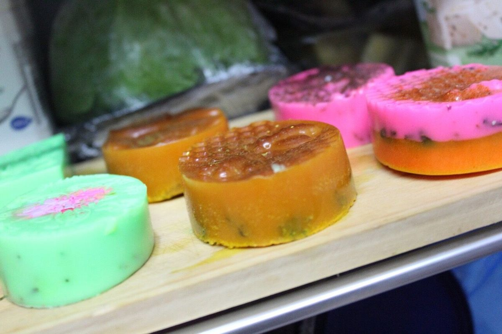

Handcrafted in Limpopo
Rooted in nature.
Made for your ritual.
Discover small-batch handmade soaps and the developing LizDeLux Botanicals body-care range.
Explore the collection
Our story
Botanical care,
beautifully considered.
Founded in 2025 as Made by Liz, the business is evolving into LizDeLux Botanicals: a broader handmade soap and botanical body-care brand created by Lizzy Maake.
Read our story →